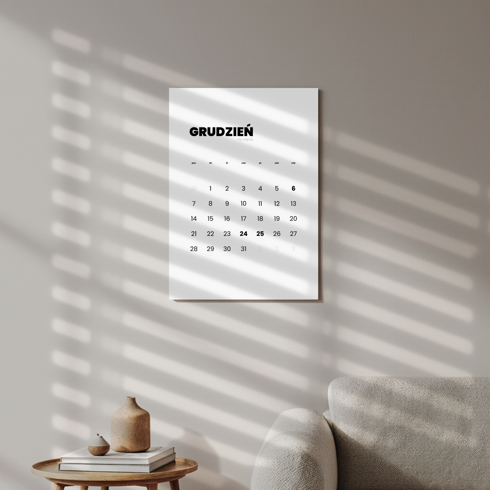
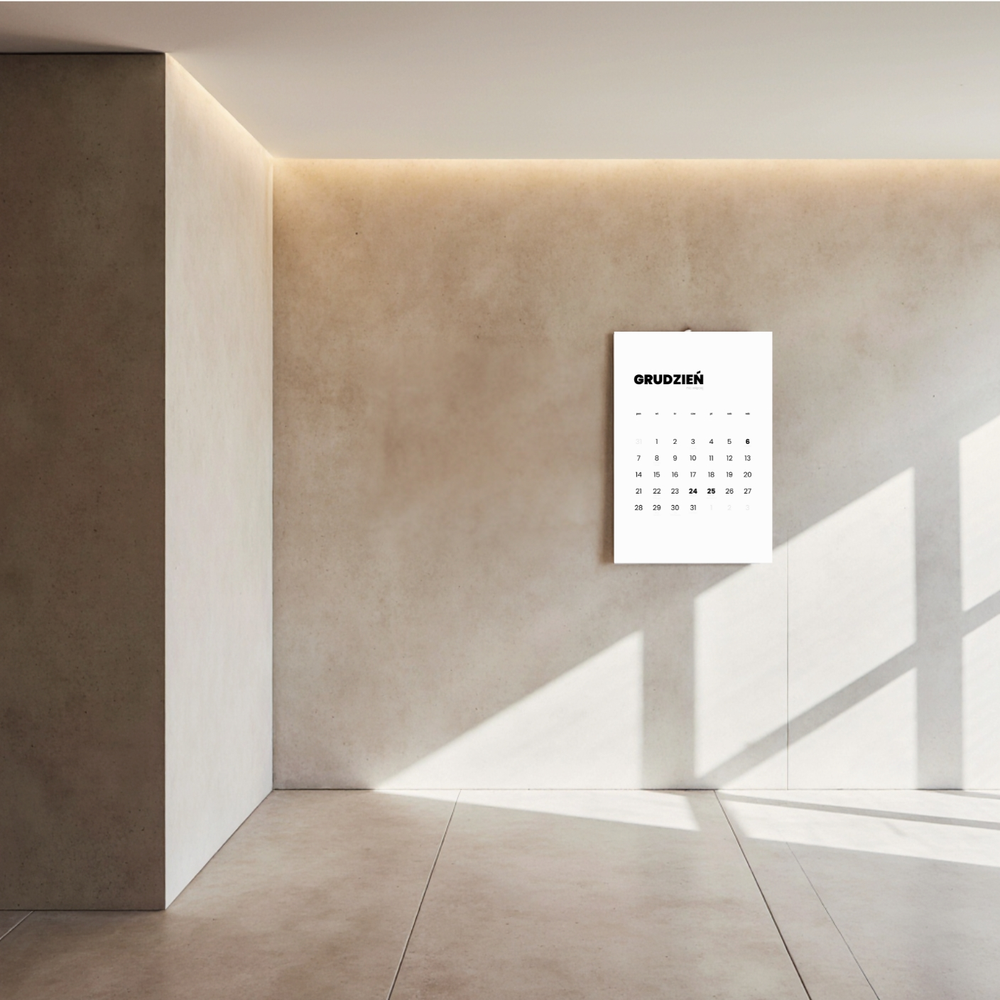
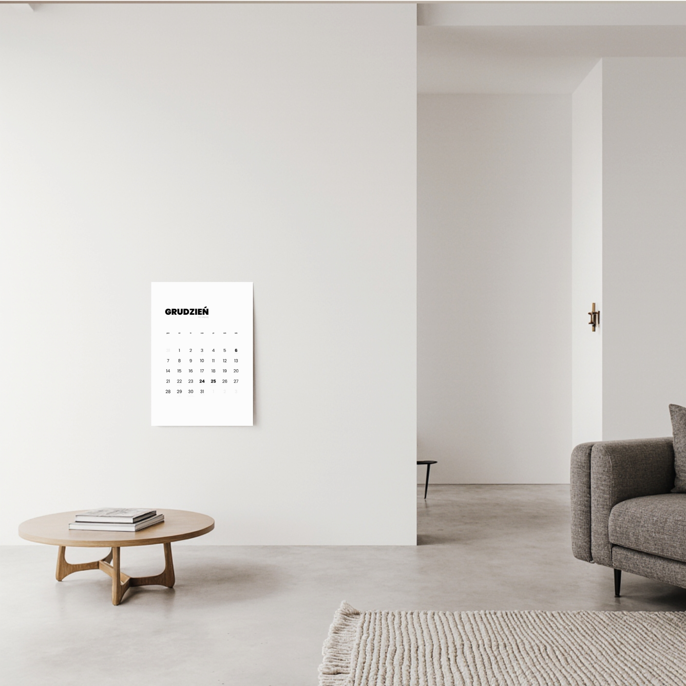
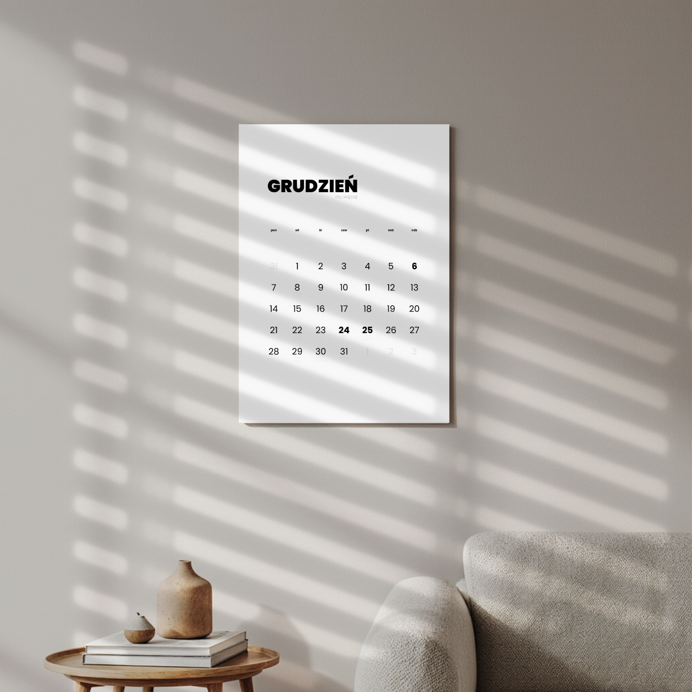
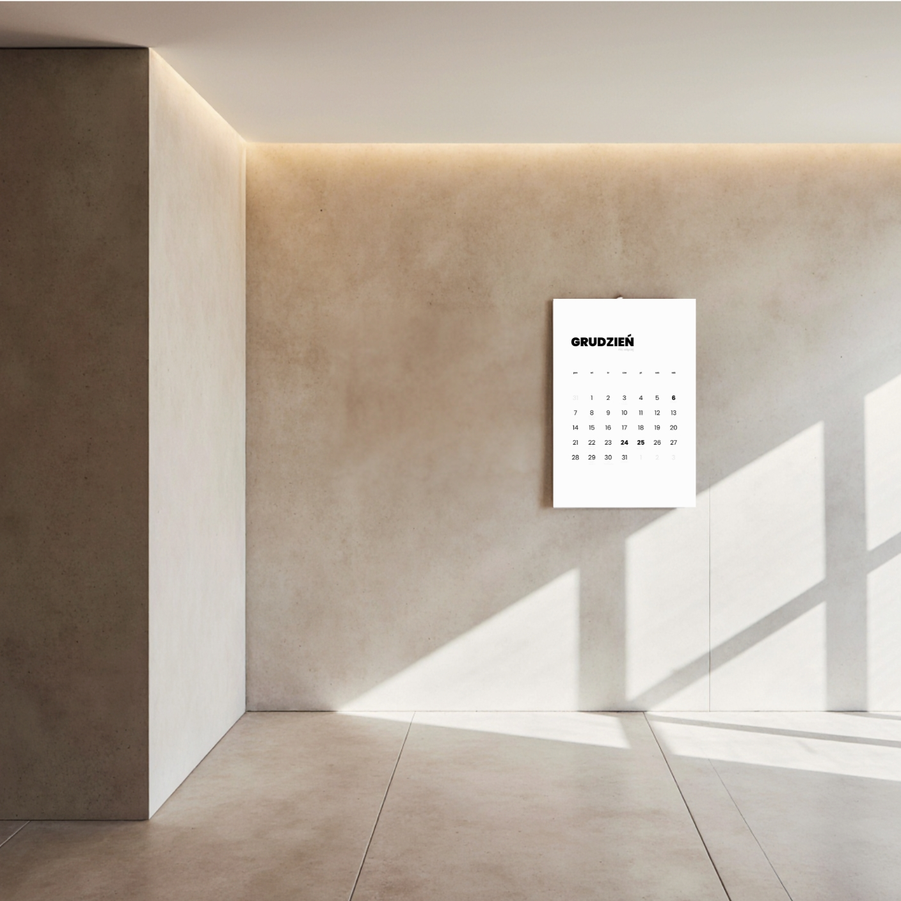
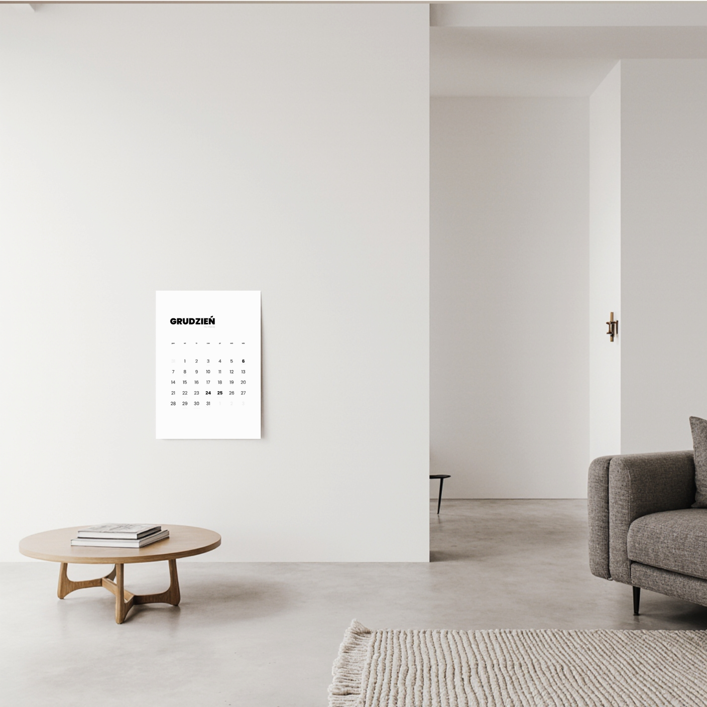

Kalendarz


 






Kalendarz personalizowany – już nigdy nie zapomnisz o ważnych datach
Zapomniałeś kiedyś o urodzinach babci, cioci, kolegi… albo, co gorsza, o rocznicy?
Nie korzystasz już z Facebooka i nikt nie przypomina Ci, komu wypada złożyć życzenia?
Znamy to! Dlatego stworzyliśmy kalendarz personalizowany, w którym robimy to wszystko za Ciebie.
To nie jest zwykły kalendarz.
To Twoja własna baza ważnych dat, w której raz wpisujesz urodziny, imieniny i inne okazje… a my nanosimy je na każdy miesiąc tak, aby były zawsze pod ręką.
Najlepsze?
Jeśli wrócisz do nas w przyszłym roku — wszystkie wpisane daty mamy już gotowe.
Chcesz coś zmienić? Nie ma problemu.
A jeśli podasz nam rocznik np. cioci Zosi — przygotujemy dla Ciebie dodatkową kartkę z pełną rozpiską lat.
Trzymaj długopis pod ręką!
Ten kalendarz powstał z myślą o codziennym życiu, dlatego zostawiliśmy mnóstwo miejsca na własne notatki. Bo o to przecież chodzi w dobrym kalendarzu — żeby realnie pomagał.
Zapiszesz w nim, na którą w czwartek jest zebranie w szkole, o której masz spotkanie ze znajomymi, albo kiedy wypada wizyta u lekarza (tak, ta za tydzień o 17:15).
To miejsce, które żyje razem z Tobą i Twoim rytmem dnia.
Jak to działa? – prosta instrukcja w 5 krokach
• Pobierz plik Excel lub ODT.
• Uzupełnij daty, które chcesz mieć w kalendarzu.
• Wyślij nam wypełniony plik.
• Zamów i opłać produkt — my zajmiemy się resztą.
• Po około tygodniu wypatruj paczki z Twoim spersonalizowanym kalendarzem.
Co dostajesz?
Format A3 — czyli dwa razy większy niż standardowa kartka A4.
Gruby, elegancki papier o wysokiej jakości.
Czytelny, minimalistyczny układ.
Wszystkie Twoje ważne daty wpisane we właściwe miejsca.
Produkt przygotowany ręcznie, specjalnie dla Ciebie.
📄 Pobierz arkusz do uzupełnienia - Microsoft Excel
📄 Pobierz arkusz do uzupełnienia - LibreOffice